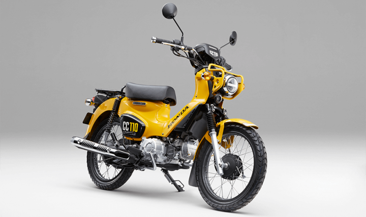

2013년에 기존 슈퍼 커브 110(JA10)을 베이스로 파생된 크루징 & 어드벤처 타입. 슬로건은 'The Crossover a Life and Play'로 도로, 비포장도로 주행을 즐길 수 있으면서, 일반 승용으로도 사용이 가능한 모델이다.
와일드한 외관이 특징으로 오래 전 한 시대를 풍미한 헌터 커브의 디자인을 계승하였다. 설계 자체는 커브 Pro가 베이스, 색상도 파스텔톤이 많은 기본모델과는 다르게 노랑/검정, 빨강/검정, 회색/검정으로 색상대비가 강해 눈에 확 띈다.